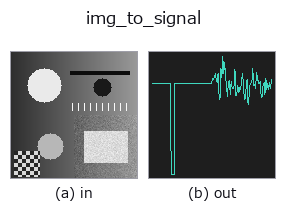

bridge op• データ種: image → signal
• 呼び出し: fullseye.apply(img, "img_to_signal", a=0.5, b=0.5) (2-D は 1 画像 + 2 スカラつまみ a,b∈[0,1] のモデル)

*図は合成の入力 128×128 で実際に走らせた出力。左が入力、右が出力。点群は上から見た散布(明るさ = z)、1-D 列は折れ線、体積は z 方向の最大値投影、動画は中央フレーム、複素画像は振幅、絵にならない返り値は値そのもの。*
つまみ a を振る(0.1 / 0.5 / 0.9、もう一方は既定):
▸ img_to_signal: knob a sweep (docs site)
つまみ b を振る(0.1 / 0.5 / 0.9、もう一方は既定):
▸ img_to_signal: knob b sweep (docs site)
別の画像でも(合成シーン / 写真 / 硬貨。上段が入力、下段がその出力。つまみは既定):
▸ img_to_signal: other inputs (docs site)
*4 列目はカラー (H,W,3) の入力。この op は色を跨がずに扱える(色チャネルを 3 本目の空間軸として畳み込まない)。*
画像の 1 行(または 1 列)の濃度プロファイルを 1-D の signal にする。
• `a → 位置。b < 0.5 なら行 r = round(a * (H-1))` を横に読む(長さ W)、
`b ≥ 0.5 なら列 c = round(a * (W-1))` を縦に読む(長さ H)。a=0.5 は中央。
• 返り値: 1-D float64、値はそのまま(正規化しない。画像が [0,1] なら [0,1])。
• 補間はしない(画素の値をそのまま並べる)。斜めの線が要るなら `line_profile`
(台帳)を使う。
使いどころ: 1-D 関数の族(`tb_smooth_funct_1d_gauss / tb_derivate_funct_1d` /
`tb_bandpass` …)を画像の断面で試す入口。周期構造(市松・縞)を横切る行を
選ぶとスペクトル系 op の効果が見える。
• サンプルデータ カタログ(DL URL / ライセンス) — 2-D は skimage.data(BSD/public)+ 合成、3-D は実データ源(Stanford/PDS 等)の DL URL。
• 演算子の来歴・参考文献 — この op 族の元になった研究/手法の出典。
• アルゴリズムの正典(著者・年)と用途は上記ファミリ使い方ガイドに記載。
下のプログラムは実際に走ることを確かめてある(図と同じ入力)。Studio のヘルプではこのブロックがボタンになり、その場で読み込んで実行できる。
img_to_signal 0.50 0.50
▸ Load this pipeline · Load & run
• gallery2d_bridge — py -3.11 examples/gallery2d_bridge.py
signal を入力に取れる)identity · tb_create_funct_1d_array · tb_smooth_funct_1d_gauss · tb_smooth_funct_1d_mean · tb_derivate_funct_1d · tb_integrate_funct_1d · tb_zero_crossings_funct_1d · tb_abs_funct_1d
bridge)img_to_points · img_to_keypoints · img_to_counts · img_to_matrix · img_to_video · img_to_volume · img_to_lightfield · img_to_rgb
*Provenance: ops.py — 2D operator registry. この per-op ノートは tools/opdocs.py md が自動生成(手編集しない)。*
© 2026 Kazufumi Furuse — Fullseye operator documentation. Licensed under Apache-2.0.
{kind=link}
{kind=link}
{kind=link}